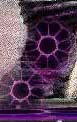

For the last six years, I have been examining the relationship of art
and technology in its multitudinous forms. During that time, my investigations
have felt like they were leading me into...
A cold world where bodies get prepped
for downloading into data, where seeing means artificial optics, where hearing
is listening to the high-speed world of sampler culture, where traveling
becomes a nomadic journey across the MUD (Multiple User Dungeons), and where
communication disappears into the high-speed fiber "backbone"
of the Internet. - Data Trash
So, my expectations upon embarking on a journey into the netherworld of
nanotechnology, were at first fulfilled. The book, Nano, the emerging
science of nanotechnology: remaking the world - molecule by molecule
by,Ed Regis left me with a vision of the future
I wasn't too sure if I liked. Nano follows the conceptual life of futurist
K. Eric Drexler. According to Drexler, nanotechnology
is the manufacture of objects from the molecular level up. This feat would
be accomplished by the manipulation of individual atoms by microscopic robots
which Drexler calls assemblers."The end
result would be to have 'effectively complete control of the structure of
matter'."
Perhaps it was the manner in which Drexler's future was represented by Regis
that left me feeling that perhaps obsolesce of the artist was only a matter
of years -- and within my lifetime. As I dug deeper, however, I saw a new
perspective on artists' relationship with technology.